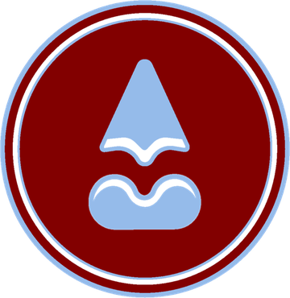
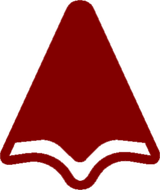
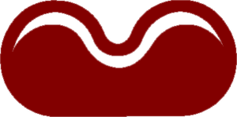

Sou Ale, uma mente curiosa e criativa que transita entre design e tecnologia. Gosto de transformar ideias em experiências, conectar pessoas a soluções e explorar diferentes formas de criar. Entre códigos, desenhos e projetos, estou sempre buscando novas maneiras de dar vida às minhas ideias.

AlessandraBarbosa
Design, tecnologia e ideias em movimento.
Entre código, traço e estratégia.
Sou apaixonada por arte, cultura, universo, tecnologia e pelo meu estado, Pernambuco. Gosto de transformar ideias em soluções e me interesso tanto pela parte visual quanto pela estratégica e técnica dos projetos.
Não sou só quem programa, nem só quem desenha: transito entre as áreas, entendo o problema, idealizo a solução, estruturo o projeto e transformo em experiência.

Tecnologia com criatividade, design com propósito e ideias que ganham forma.
Análise e Desenvolvimento de Sistemas
Último período. Sistemas, web, dados e processos.
Design Gráfico
Primeiro período. Identidade visual, composição e linguagem.
Pernambuco no peito
Arte, cultura, diversidade e regionalidade são ponto de partida do que crio.
Projetos
Arraste, use as setas ou toque em um projeto para abrir os detalhes.
O traço fora da tela
Desenhos e ilustrações: o lado que não tem prompt nem commit.
O que levo
na bagagem
Tem uma ideia? Vamos tirar do papel.
Bora conversar? Me chama.